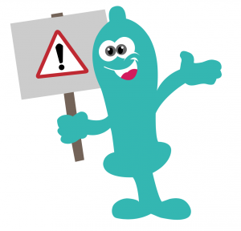

LE PRÉSERVATIF
Le préservatif n’a pas toujours bonne presse. « Il me serre trop », « il m’empêche d’avoir une érection », « c’est un tue-l ’amour ». Pourtant, qu’il soit externe ou interne, il constitue une barrière efficace contre la plupart des IST.